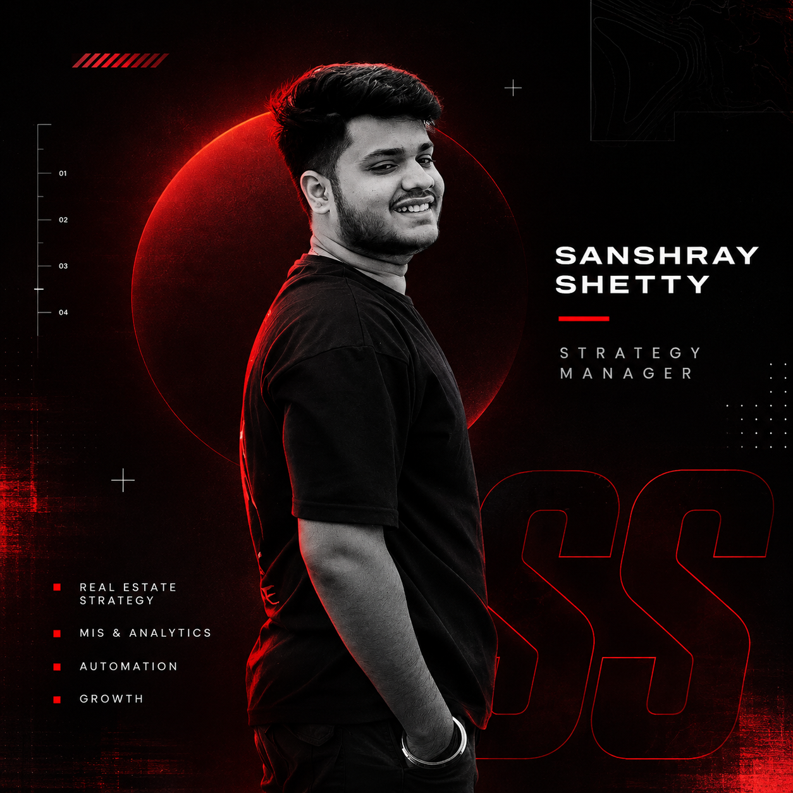

01
BUSINESS INTELLIGENCE / MIS
From raw data
to clear decisions.
Reporting structures, dashboards and performance views that help teams see what is happening and decide what to do next.
DATA → DIRECTION
↗
THINK CLEAR. BUILD SMART. EXECUTE.
I turn complex business questions into clear systems, useful insights and decisions that move work forward.

I'm Sanshray Shetty — a Strategy Manager with a Computer Science background, working at the intersection of business, data and execution.
I enjoy understanding how a business works beneath the surface: where information gets stuck, where processes slow down, and where a better system can create meaningful impact.
My approach is practical. Ask better questions, make the numbers speak, simplify the moving parts, and turn insight into action.
“Clarity is a competitive advantage. Good systems make it repeatable.”
A few areas where I like to create value. Case studies and project details can be added as they are ready to share.
Reporting structures, dashboards and performance views that help teams see what is happening and decide what to do next.
Connecting project performance, customer signals and operational metrics to support sharper business decisions.
Finding manual friction and designing cleaner workflows using spreadsheets, lightweight tools and automation.
NOTE: THESE ARE CAPABILITY AREAS, NOT CLAIMS OF SPECIFIC CLIENT DEPLOYMENTS.
Get context before jumping to solutions. Understand the people, process and numbers.
Organise information, define the signal and create a clear path forward.
Build, measure, learn and improve. Keep the solution useful in the real world.
HAVE A GOOD QUESTION OR A BIG IDEA?